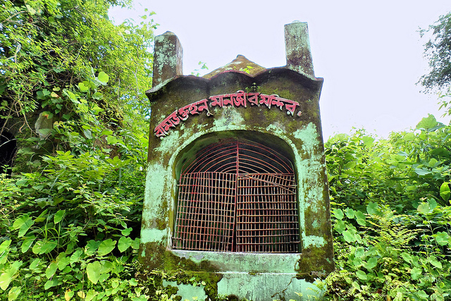
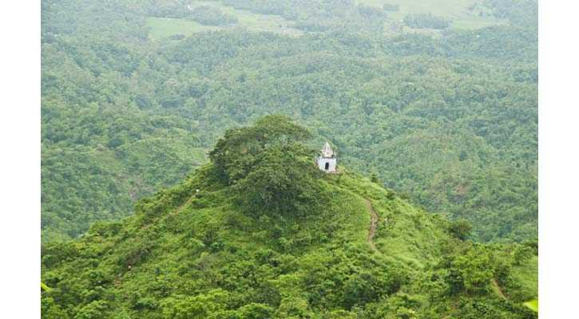
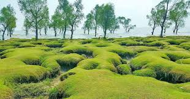
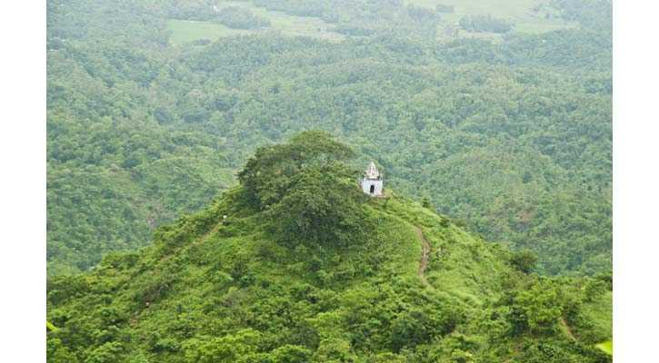
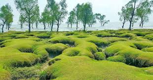
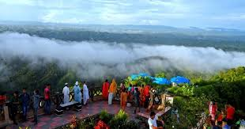
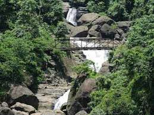
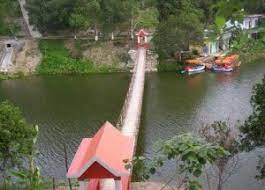
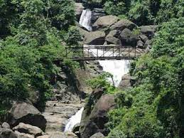
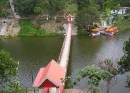

SHITAKUNDA
The legends of the area state the sage Bhargava created a pond (kunda) for Sita to bathe in when her husband Lord Ramchandra visited during his exile in the forests. Sitakunda derived its name from this incident. however, it has some beauiful places named Chandranath hills ,Suptodhara waterfalls,Guliakhali sea beach , Sohosrodhara-1, khoiyachara, akilpur beach, cafe24, eco park etc
 



Bandorban
Bandarban, is a district in South-Eastern Bangladesh, and a part of the Chittagong Division. It is one of the three hill districts of Bangladesh and a part of the Chittagong Hill Tracts.

 


